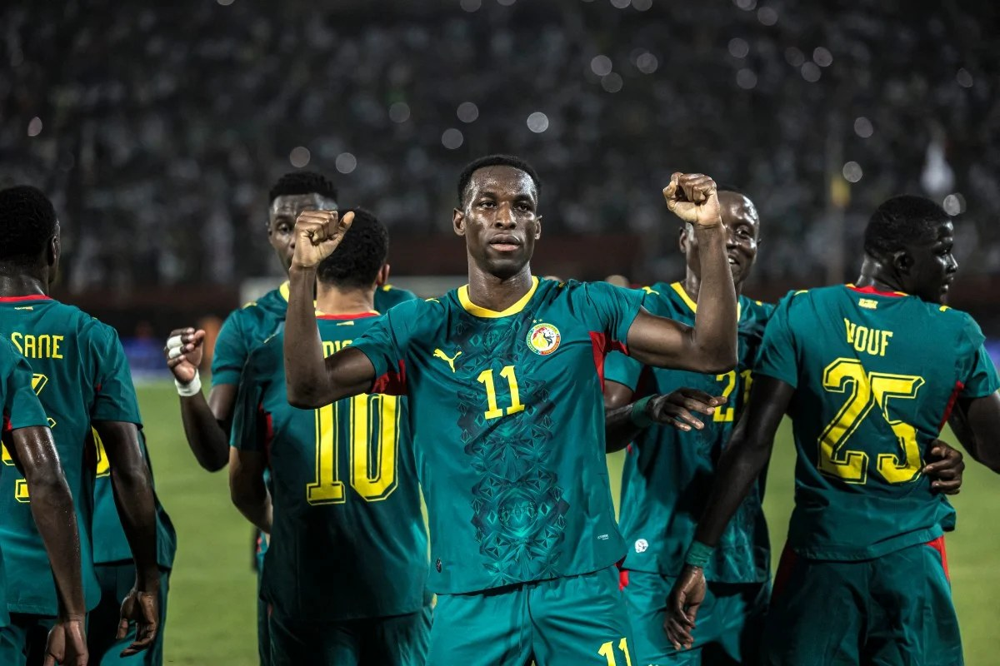

Jackson scores as Senegal move closer to 2027 AFCON

Senegal moved closer to the 2027 Africa Cup of Nations after recovering from a second-half fightback to beat Sudan 4-2 on Monday. Nicolas Jackson opened the scoring in the fourth minute, and defender El Hadji Malick Diouf added a second midway through the first half. The match was played in South Sudan, where Sudan hosted the game because of civil war in its homeland.
Sudan fought back to level the score by the 75th minute, with substitute Al Gozoli Nooh and Salaheldin Adil finding the net. Senegal responded late: Pathe Mboup restored their lead before setting up Paul Mendy to score in added time. Jackson had also scored in Senegal’s 4-1 win over Sudan the previous Thursday. He arrived for the international matches after scoring nine goals in all competitions for Aston Villa this season.
Cameroon strengthened its position with a 3-0 victory over Namibia, while Benin secured a 1-0 win against the Central African Republic through debutant Ede Oloko’s added-time goal. Senegal, Cameroon and Benin each have 10 points from four matches and could be confirmed as qualifiers on Tuesday, depending on results elsewhere in their groups. The Central African Republic has now lost four consecutive matches.
In other games, Zimbabwe beat Equatorial Guinea 3-0, Guinea defeated Eritrea 3-1, and Ghana edged Somalia 1-0 through a Jordan Ayew penalty. Zimbabwe were the only host nation to play at home among Monday’s six matches; the Central African Republic, Eritrea and Namibia lack international-standard stadiums. Senegal is also awaiting a decision from the Court of Arbitration for Sport on its appeal against the Confederation of African Football’s ruling that Morocco were champions of the previous AFCON tournament.
Source: Punch